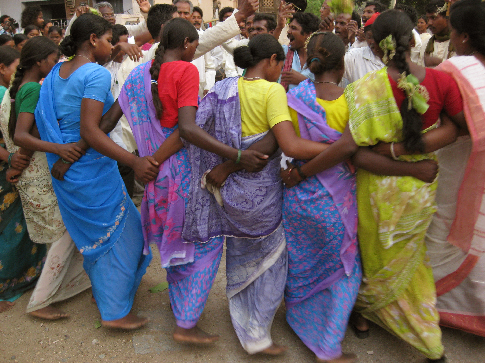
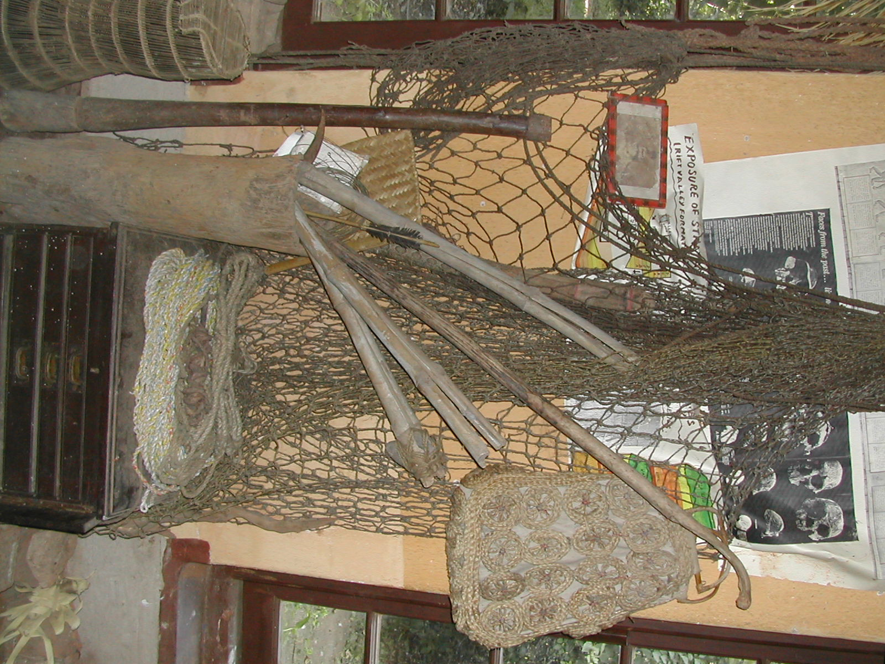
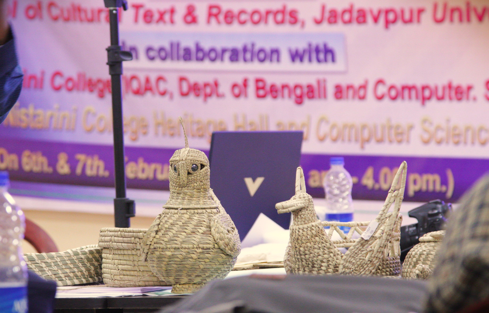
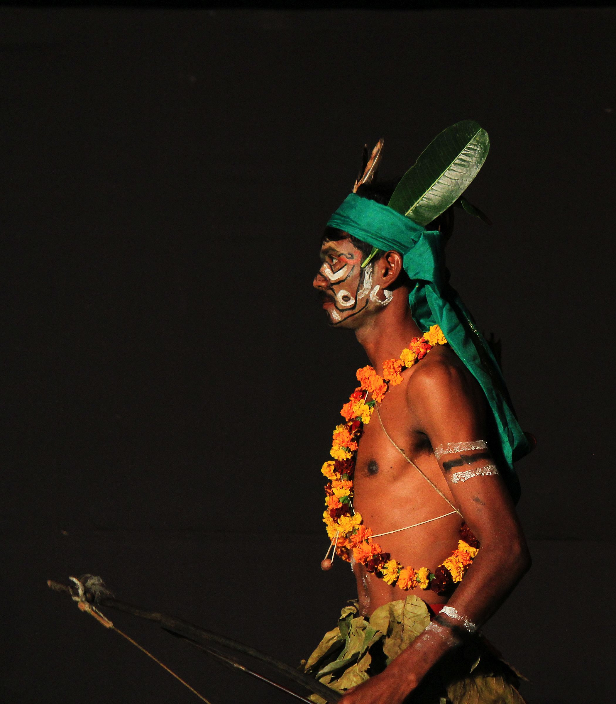

Explore Jharkhand
Communities, languages, festivals, art, music, crafts, food, architecture and changing lives across the plateau.
The Peoples of Jharkhand
An introduction to eight major indigenous communities. Each profile highlights customary governance, language roots, and distinct material cultures.
 Austroasiatic
Austroasiatic
Santhal / Santal
Largest indigenous group in Jharkhand, primarily residing in Santhal Parganas. Renowned for their written script Ol Chiki, rich epic oral poetry (Karam Binti), and vibrant Sohrai clay wall murals.
 Austroasiatic
Austroasiatic
Munda
Ancestral dwellers of Ranchi and Khunti districts. Pioneers of the historic Parha confederal system and megalithic stone memorial burial grounds known as Sasandiri.
 Dravidian
Dravidian
Oraon / Kurukh
Speakers of the ancient Kurukh Dravidian tongue. Known for the cultural youth academy institution Dhumkuria, agricultural water-management mastery, and the spring Sarhul ceremonies.
 Austroasiatic
Austroasiatic
Ho
Concentrated in the dense sal tracts of West Singhbhum. Stewards of the Manki-Munda governance framework and the historic Warang Chiti script devised by scholar Lako Bodra.

AustroasiaticKharia
Divided traditionally into Hill Kharia, Dhelki, and Dudh Kharia branches. Unrivalled botanical ethnoknowledge of medicinal plants and sustainable forest foraging practices.

AustroasiaticBirhor
Literally 'People of the Forest'. Traditionally nomadic hunter-gatherers and master artisans of high-tensile ropes and hunting nets woven from wild Bauhinia (Chop) creeper fibres.

AustroasiaticMahli
Specialized artisanal bamboo craft workers whose winnowing baskets (Sup), storage bins (Daura), and umbrella structures form the functional backbone of tribal village agriculture.

AustroasiaticBhumij
Inhabiting Manbhum and Dhalbhum plateau tracts. Celebrated for clearing early forest plateaus for terrace agriculture, heroic resistance under Ganga Narayan Singh, and brass metalwork.
Curated Museum Exhibits
Deep dive into specific artifacts, seasonal ceremonies, sacred landscapes, and metallurgical arts.

Sohrai & Khovar Clay Murals
Painted by women artists onto mud walls following the winter paddy harvest. Combines tooth-twigs and cloth rags with four wild earth clays (black manganese, yellow ochre, red hematite, white kaolin).

Dokra Lost-Wax Metallurgy
Hollow-core bell metal casting dating back to the Indus-Harappan era. Artisans wind fine natural beeswax threads over a river-clay core before encasing and pouring molten brass.

The Terracotta Mandar Drum
The acoustic heartbeat of Jharkhand. Unlike flat frame drums, the clay body of the Mandar creates deep sub-harmonic resonance that carries across valley akhra dance grounds for miles.

Sarna: The Sacred Sal Sanctuaries
Virgin patches of indigenous Sal forest where no tree may be felled. Serves as spiritual dwelling for Gaon Deoti (village guardians) and ecological seed-banks preserving endemic flora.

Sarhul: The Feast of Flowers
Celebrated in Chaitra (March-April) when Sal trees erupt in aromatic pale blossoms. The village priest (Pahan) performs water divinations to forecast monsoon agricultural yield.
Sasandiri: Megalithic Memory Stones
Massive stone slabs laid flat or erected as standing menhirs (Bid-diri) to house clan bone deposits. These megalithic sites serve as incontestable oral land registry deeds in customary jurisprudence.
Sources & Documentation Framework
How DISOM gathers, classifies, and ethically validates cultural knowledge without stereotyping.
Documented Records
Peer-reviewed anthropological literature, gazetteers, linguistic corpora (Grierson, Hoffman, Archer), and historical enactments like the CNT Act and PESA.
Living Oral Histories
Elders' recollections, songline verses, customary sayings, and clan origin genealogies recorded directly with community consent and attribution.
Ethnographic Interpretation
Curatorial commentary and comparative analysis, clearly flagged as institutional interpretation rather than ancestral community dogmas.
Community Verification
Entries under community peer-review are labelled with prototype flags until authenticated by resident cultural practitioners and clan elders.
Notice a historical detail that requires nuance or correction?
DISOM is an evolving archive. We welcome community custodians, researchers, and native speakers to contribute additions or corrections.
Submit Cultural Correction